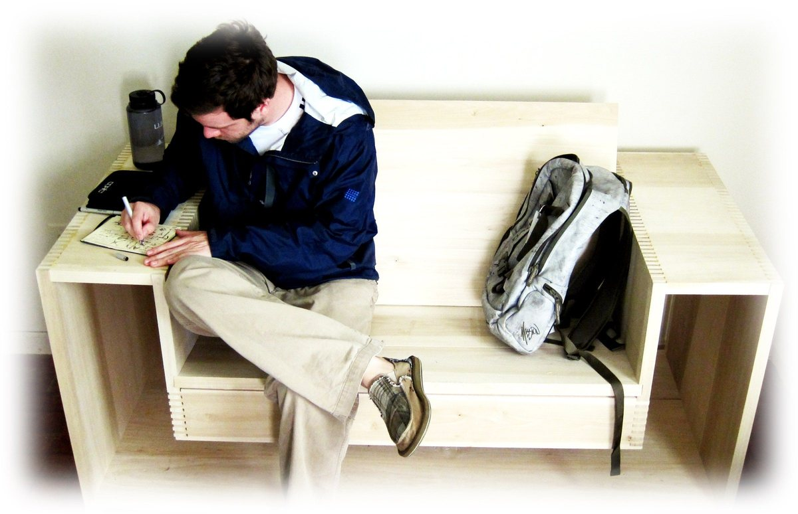
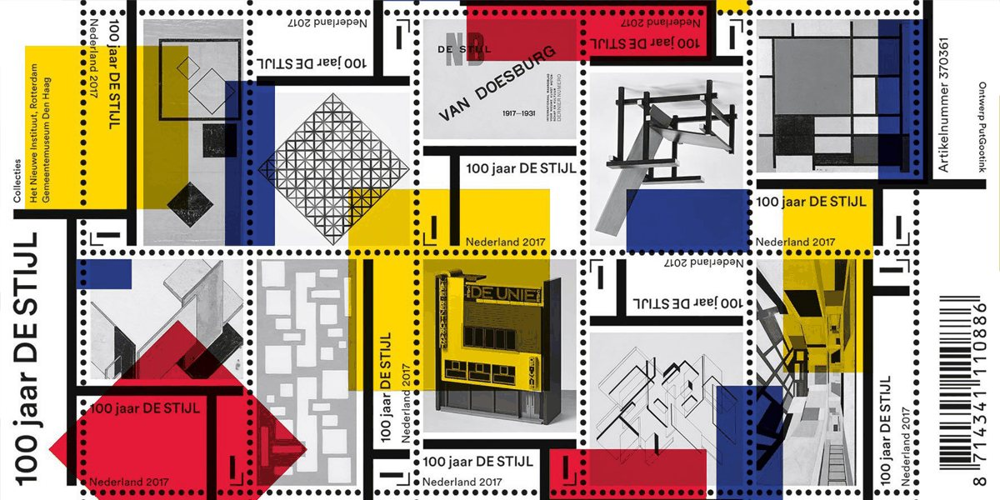
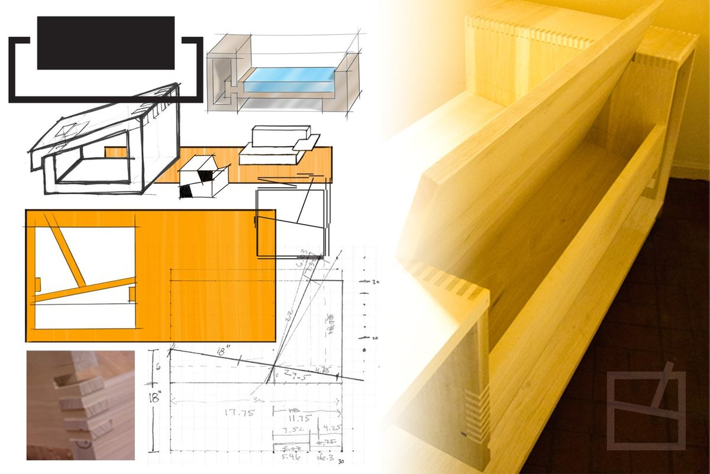
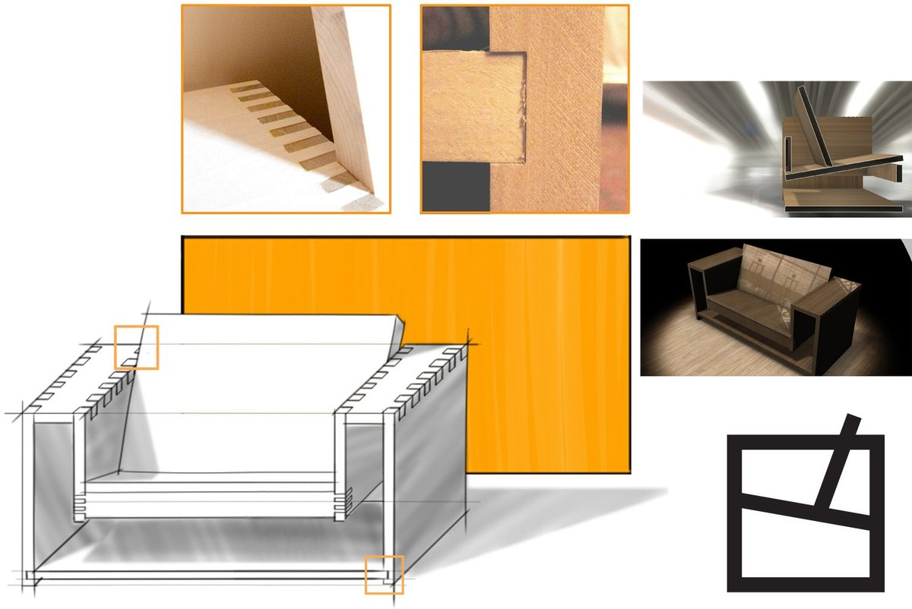

BEN
BEN is a bench I designed and built in a week at the end of college, after years of thinking about it. It borrows the relaxed angles of an Adirondack chair and the reduced, floating forms of the Dutch De Stijl movement, sized for my 6'2" frame.

Adirondack comfort, De Stijl form
A beach-vacation Adirondack chair started the idea; a college studio on the Netherlands gave it a style. De Stijl stripped form down to essentials and let parts appear to float. An outer frame steadies the bench, physically and visually, while the seat floats inside it. A later version drops the frame so it sits lower and steadier.


